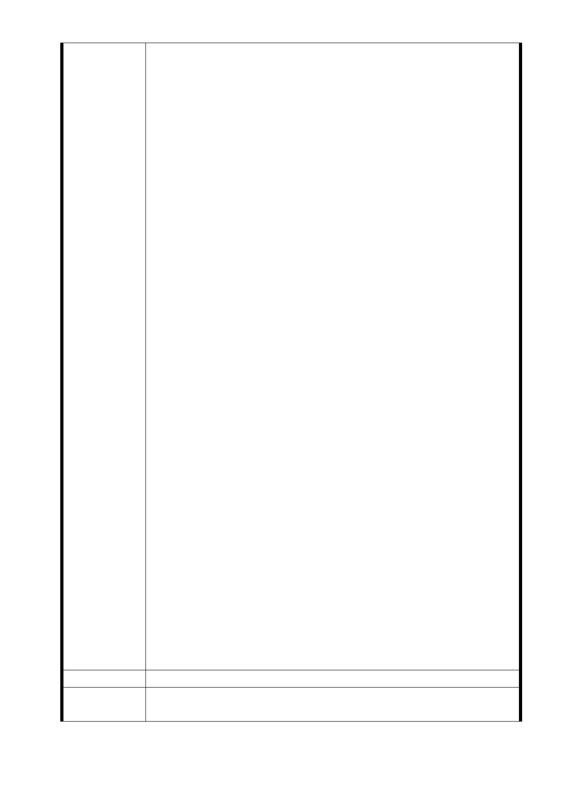

的徵收理由僅是用 ICAO Annex 14–國際民航公約的第 14 附約
，要檢討跑道與相關燈區為由就要強徵民地的說法，認為還是
不夠充分去褫奪憲法保障人民財產的自由，民眾主要的問題來
自於實際實施場域的切割，這些在現有的都市計畫裡面看不到
，也讓當地民眾無法了解其權益之影響。
2.居民認為飛航最大問題不是來自跑道淨空區問題，主要安全指
標是空中接近、跑道入侵等等，甚至國際空難百分之七十以上
來自人為的未按規定作業。松山機場未加寬跑道之前，過去 10
、20、30 年每一年有多少件飛航安全問題？這其中有多少安全
問題是來自跑道淨空區不夠寬（不是現在媒體誤導的跑道加寬
）？跑道淨空區擴大後能夠改善百分之多少的飛航問題？跑道
淨空區加寬就能改善旅運量增加的飛航安全問題嗎？何況民
航局與北市府都正在進行松山機場中、長期檢討遷移的可能性
，加寬後的跑道即有可能只用了幾年整個機場就要全部遷走而
改為其他用途，這豈不是「捷運美河市」的翻版？
3.因此我們強調政府如果真的為了安全理由要徵收民地，有義務
讓全體市民更清楚知道現有飛安的情形並提出更具體的安全
係數目標要由多少降至多少？同時要跟民眾簽下切結書，如果
要徵收居民奮鬥幾代或一輩子最大資產的心血，要能夠保證此
一加寬的跑道能夠使用一定年限以上，未達年限之前絕對不會
移作他用。
4.此一主要大面積的變更都是在松山區結果防災避難計畫卻是
要設在中山區，以防災的名義要機場外的民眾由西側松江路
581 巷即建議開闢 15 公尺寬的計畫道路作為疏散逃生的路線
，難道松山機場松山區的居民會比中山區的居民還不能列為最
優先考量嗎？現在政府預算吃緊，要開闢防災道路，也該是先
想想看許多民眾是搭捷運柵湖線去松山機場搭機，這些路上的
民眾萬一事故發生要如何能夠清楚知道逃生路線？而且要從
松山區逃到中山區這條新闢計畫道路，要怎麼逃？要多久能抵
達？
5.北市都發局真的站在台北市的永續經營考量嗎？還是只是服
從地聽從中央指示而做都市計畫變更？本辦公室詢問都發局
知不知道這 2.27 公頃要被徵收的居民在哪幾個里的範圍內﹖
多少人是在那些土地上就業？都發局的答案都是不知道！推
說民航局會發函請區公所代轉等等，這樣的都市計畫有把人本
考慮進去嗎？既然知道松山機場在桃園捷運通車，遷移可能性
大增，也委外發包了相關研究案，為什麼要急著在此時趕走也
奉獻了台北市多年稅基的市民，又無法提出合理的補償機制呢
？
建議辦法
市 府 回 應 1. 交通部民用航空局於未來辦理土地徵收時，將依土地徵收條
意 見 例規定，按照徵收當期之市價補償其地價。
- 31 -